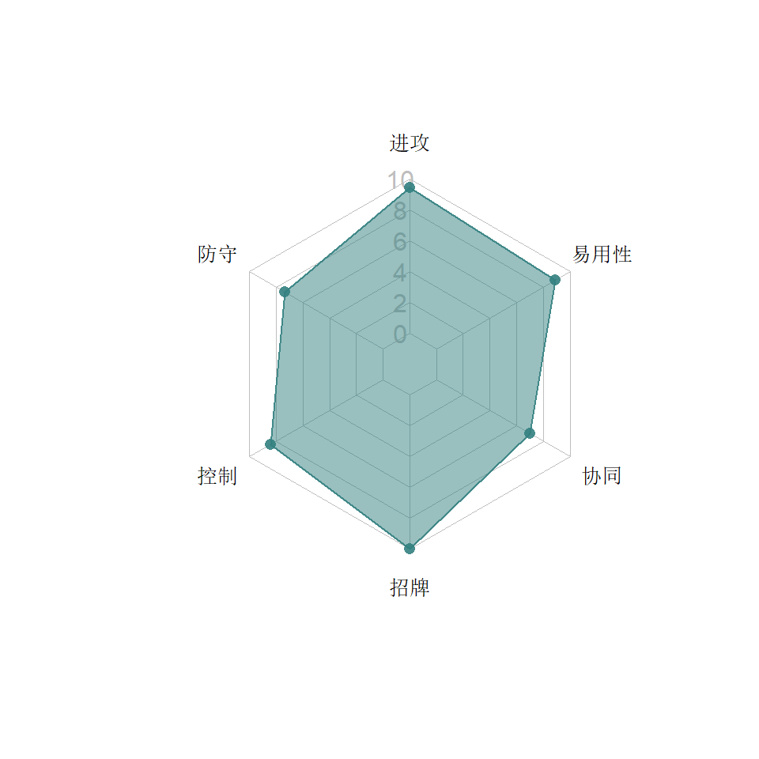
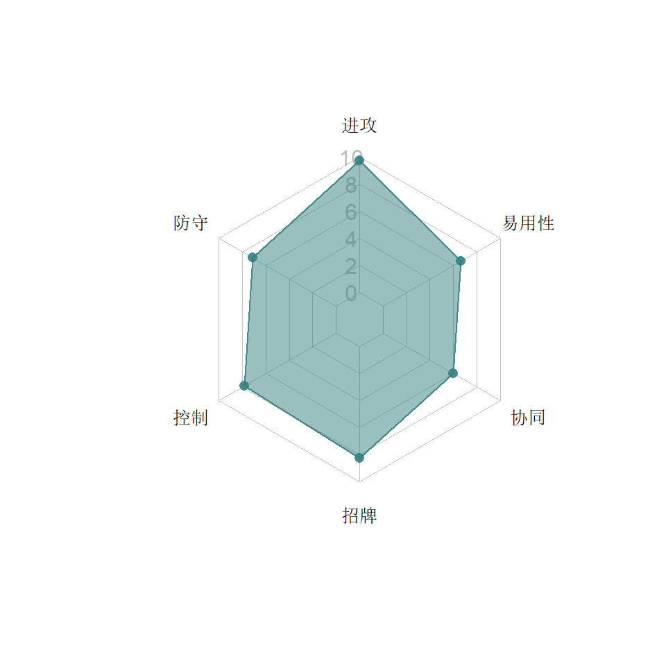
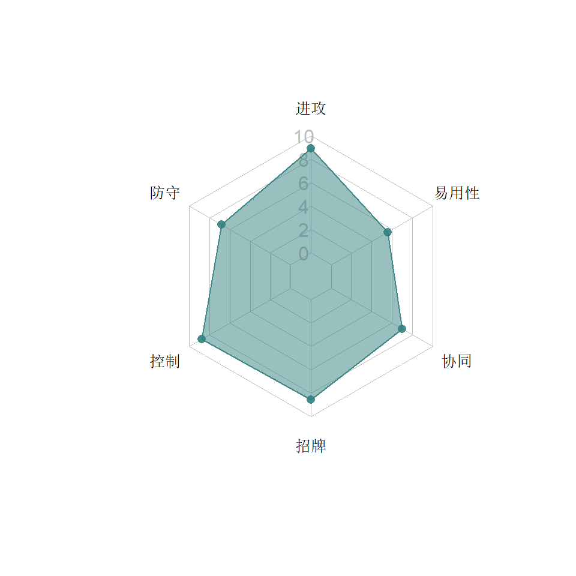
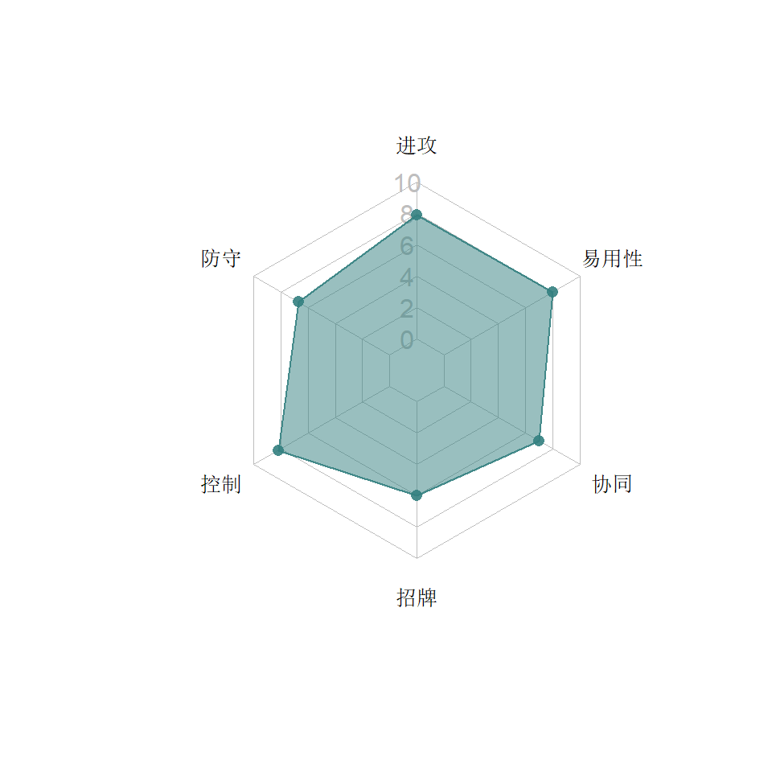
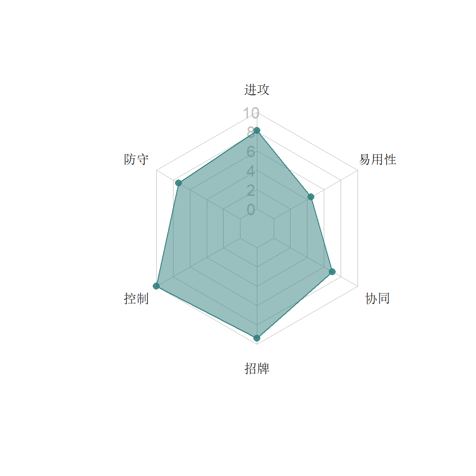

7  科技系
科技系
科技系机器人输出不高，主要强大的技能进行控制，持续的伤害消磨对手，同时用护盾和回血等能力保障续航，克制爆破系。
类别关键字：加气，加攻，震击，眩晕，控气，护盾，回血
7.1 救护车

7.1.1 特点分析
曾经的不死真神，虽然经历了严重削弱，但依然顽强，使用得当还是不死小强。再加上与战擎的搭配，让救护车在新手和高手手中有都妙用。
7.1.1.1 能力
- 自我诊断少于半血时，完成一次重击（没撞倒不要紧，但是中途不能被打断）就开始回血，达到半血时停止，回血过程还给自己加气，以便达到S2进一步回血
- 远程攻击有20%的暴击加成，暴击将施加震击。这对救护车的输出做了一定程度的补充。
- 在暴击命中的时候每层震击都有15%的概率打晕1.5秒
- S1有40%的概率晕2.5秒，每层震击加20%的概率，换句话说3层震击就必晕。S1平时是救护车主要的输出手段，发现打晕时狂点枪可以打满5发搏到更多都震击，再前冲一套内如果打出第二个S1几乎是必晕，再循环……主要的问题是怕打红，这时还是需要高等级的抑制器精通才能起到作用，实在快红也就不要上去近战了，开始骗招吧。
- S2大幅度回血并且加气，损失的生命值越多给自己加气越多。所以救护车就靠着自我诊断和S2，可以很容易从濒死状态顽强地把生命加回来。
- S3输出比较可观并提升暴击率。不过平时用的较少。
7.1.2 推荐打法
7.1.2.1 长战斗
是的，救护车几乎就没有短战斗——或者说50连以下的战斗，除了搏一搏连晕的豪爽，有何必要上救护车？同样打爆破，就算用被克的同战力红蜘蛛也消灭得比救护车更快。
半血以上的时候先靠S3打输出或者连晕搏震击（注意别打红），半血以下找机会重击，对自己相持能力有信心的话，可以等自我诊断差不多回到半血再放S2，这样就能回到超过一半。在血量很危急的时候有S2赶紧放，因为即使裸放，电脑一般都会傻傻冲上来然后被弹开倒地，不会抓S2的空档来欺负你。
盟战中救护车死了吃一个便宜的单体复活基本就够，这时开场千万不要想当然一个重击，一定要找好机会屈防再搏重击，根据经验，开局电脑防御后面对第一下重击一般都是必中的。重击过后一定要求稳和电脑相持，点枪尽量一枪就跑，由于一次自我诊断的时间长达10秒不能叠加，所以没必要频繁刷新，侧闪反击用打满5连再后闪的方法，不要四连一撞反而被电脑坑了。一般残血开局要一个完整的自我诊断配合途中普攻的能量才能等到S2，放完S2才不会被一枪点死，所以开局需要特别的耐心。当然，如果开局不利被摸死了……就赶紧暂停无耻地杀后台重来，因为是残血，扣一半血又如何？——那你还需要复活药吗……
7.2 幻影


7.2.1 特点分析
幻影是游戏头一批机器人，以其复杂有针对性的打法成为科技系最有科技感的人物，前期是高手的宝贝。但是由于对觉醒等级要求较高，在五星时代虽然是第二批入池子的机器人但已逐渐被玩家冷落。
7.2.1.1 能力
- 重击可穿过远程攻击，早期重击距离长的时候与风刃一样是很赖皮的机器人，距离削弱后基本上回到了普通水平。重击可净化燃烧，这明显是对标铁皮的。
- 幻影开始战斗是能量模式，这时能量功率比正常人多30%，帮助幻影得到特殊技来切换模式。在此模式下，对方使用特殊技的时候会立即激活护盾，护盾对暴击和远程攻击减伤效果特别明显（5阶时减伤90%），所以靠特殊技吃饭的爆破系在幻影身上很难打出伤害，早期幻影也是手残党对付爆威Boss或者突袭中激光爆威的良药。
- 幻影的远程小枪100%护甲穿透，这让他的枪命中时跟拳头的伤害有一拼，防御伤害也略高于常人，觉醒后配合S1的射速提升，让幻影在远程战中颇有优势。
- 幻影的3个S技各具特色，演化出三种不同的打法，可根据战况灵活切换。
- S1：发动后进入干扰模式。远程攻击60%的概率减气，由于命中或被防都会减，这让幻影有不错的控气能力。
- S2：发动后进入失能模式。每次近战攻击施加一层长时间减攻（最高15层，5阶的幻影15层可以减攻71.25%，长达20秒，可谓阉割模式），每施加到7层还晕1.5秒，这让幻影可以连打三个近战7连（注意，1.5秒的晕是来不及后撤再开枪的，如果想要，可以考虑把“昏迷”精通升高一些）。三套7连打完肯定又攒到一个S1，S1最后一发如果能搏到减气，就算连晕打红也不怕。另外只要维持在失能模式，减攻过期后又可以接着晕。
- S3：发动后进入灵巧模式。每躲闪对方的攻击会叠加一层15%的永久加攻，最大20层，之后第21层会过期。前期幻影需要很近距离躲闪近战才加攻，后来暗改为任何攻击都可以闪，而且闪避的条件也比探长招牌或者横炮的加气要宽松一些，这让幻影可以有效地弥补自己输出低的不足。
- 在上述三个模式中被电脑打中就可能会回到能量模式，失去控气/减攻/堆加攻的能力直到再次发动S技，已获得的加攻不会丢失。
7.2.1.2 招牌
进一步提升三个S技的效果N秒。S1提射速，S2近战攻击破防，S3加90%攻击。如果只是刚觉醒，时间非常短（5级3.3秒，连S3都只能前两拳获得加成，S2马上前冲追打近战都来不及），觉醒高后才逐步发挥效力。尤其是盟战一厅右路的幻影，觉醒高一个S1出来后长时间小枪追身，非常伤人。 招牌获益最大的应该是S2，破防性能让幻影可以安逸地打出两连晕和S1收尾。
7.2.1.3 协同
幻影的协同相当多：搭配横炮、战术黄或黄豹时躲闪后的下一击加攻，搭配阿尔茜或探长时提升远程暴击率（幻影自己其实受益不大），搭配热破互相加暴击伤害；搭配声波和录音机再加10%的护盾强度，几乎完全免伤；同时还收到警车给予的重击堆加攻的协同，配合S3之后的攻击加成更加如虎添翼。
7.3 犀牛

7.3.1 特点分析
犀牛是游戏中最早登场的野兽之一，早期以其头疼的招牌反伤让侦查系恨之入骨。之后官方下调了对侦查时反伤的概率，但并未特别减少玩家手上犀牛的优势。后期“气天尊”的盛行也让犀牛成了突袭队伍中的瑰宝。
7.3.1.1 能力
- 上场带6个近战盾，每受到或防御近战类攻击时消耗一个。护盾把对方单次攻击伤害限制在攻击力的80%，这让犀牛在有盾时不太可能被秒杀，尤其是铁皮的S3。全部消耗后8~12秒会重新获得6个（阶数越高越快）。护盾还对燃烧和震击减伤35%。
- 在打犀牛的时候，一套5连无法有效“拆盾”，所以千万不要把后面的特殊技打在第6个盾上浪费了，除非你用的是7段普攻的“剪刀脚组合”（阿尔茜、横炮、幻影）。
- 小枪命中有30%的概率造流血，5秒内造成35~55%的伤害。对手流血时犀牛的近战普攻加攻20%。
- 重击有90%的概率进行能量锁定并汲取一点能量，这让犀牛可以有效地解除对方的“红气警报”，在面对机器人资源模块时尤其关键。锁定一次后概率大幅降低至20%，16秒后才恢复90%。犀牛重击的回弹破绽大，容易被人从天上打下来。
- S1有90%的概率驱散1层近战/远程/特殊加成。注意不是三选一，而是只要有某种就驱散一层。例如可以同时驱散掉觉醒机器人资源的特殊伤害和“勇气”精通的加攻。很多人偏好犀牛的S2，但在有机会驱散时S1也值得使用，因为驱散造成最多长达13秒的流血可以给犀牛的近战提升20%。
- S2是比较主要的输出方式，尤其在面对护甲和抗性的时候可以有效地穿透。
- S3除了施加流血，还根据对方剩余血量的多少提升伤害。不过90%以上加55%的伤害，75%以上加25%，这只有在面对强敌时才有意义，平时短战斗如果都到3格气了还没打掉敌人10%的血也太失败了。
7.3.1.2 招牌
犀牛招牌的文字写得佶屈聱牙，简单说就是在有盾的时候，敌人单次攻击（只限近战类）伤害只要超过他们基础攻击的60%就会爆盾，造成震击反伤。暴击高的侦查和战士就很容易被犀牛反坑，汽车大师残血打犀牛也会被迅速震死。高觉醒的犀牛在盟战图2中曾经是十分头疼的存在，想无伤过非常难，必须找准机会屈防拆盾。后来官方让侦查系吃爆盾的概率减少了50%。
犀牛的招牌因挨打而触发，对玩家来说很难主动利用，所以犀牛不特别依赖觉醒。不过觉醒犀牛配上奇怪的折射镜守基地有一定的效果，因为近战屈防拆盾不但会吃到模块的反伤，还有概率晕掉。盟战的犀牛Boss配了反射远程，几乎不可能屈防。打犀牛最好使用近战低暴击的角色或者普攻伤害低特殊伤害高的角色，例如……爆破系？
7.4 声波


7.4.1 特点分析
声波以其霸道的重击、独特的加气方式和独特招牌在游戏早期占据着科技系的重要地位。但后期由于重击命中的调整和盟战三厅漏气的模块失去了热度，再加上救护车和战擎的搭配、千斤顶的出现和震荡波的加强，声波的使用场合已大不如前。
7.4.1.1 能力
- 游戏早期的技能描述中语焉不详，使得很多玩家不明白声波能量获取的机制。后来官方在技能中明确提到了：声波通过重击和S2的命中给自己充能量，重击后可充到两格，S2后可充满。
- 声波的重击和S2/S3可以稳定地施加震击，这使他的输出有了额外保障，在面对恐电模块时也是最佳选择。
- 声波的重击是三连发，身后有空间的时候最好后闪躲开，因为侧闪的时机十分苛刻，早期声波的重击命中几乎是95%，后来暗改之后电脑很喜欢侧闪反击。早期声波用重击打死对手的时候对手还会站起来晕一下再倒地，后来被开发商取消了。
- S1有
50%60%的概率晕1.5秒，75%85%的概率能量流失，在平时声波可以用这个手段来控场与控气。 - S3的伤害不高，有40%的概率晕2.5秒，70%的概率出能量锁定8秒。
7.5 震荡波

7.5.1 特点分析
震荡波在游戏的剧情中是关键人物，这与他在多个变形金刚作品中的地位相符。早期震荡波没有发布时，科技饿鲨的S1动作不知是Copy谁的，后来才知道是震荡波的。发布时震荡波的技能很差，经过调整一举跻身顶级人物。
7.5.1.1 能力
- 防御远程能量型小枪（也就是漂移、雷震和反冲之外的普通远程攻击）时可最多获得3个充能，身上充能数少于3个时防御不扣血。这让震荡波在面对提升射速的幻影和阿尔茜等不会吃亏。
- 震荡波每打中一枪小枪消耗一个充能并施加一层震击，重击命中消耗全部充能施加对应层数的震击。在游戏5.1版中对震荡波作出最关键的调整在于，震击时还造成能量流失！这让震荡波不但有输出还有控气能力。
- S1在5.1版中也得到重要增强，在发动S1时获得3个充能（原先这个属性属于S2）。这让震荡波这一招可以成为比肩警车S1的神技，如果在快两格气时，防御吸满3个充能放一招S1再压起身打一套连S1，9层震击带漏气可以打得对手欲哭无泪。
- S2去掉了无用的充能，把修复格挡的能力调整到了100%触发。这个能力明显是为了对标爆威的招牌，在高伤害的同时还阻止修复。震荡波的S2很多玩家比较害怕，其实只要在出枪前连续向下侧闪就可以轻松闪过，不能向上闪。
- S3就是S1和S2的合并版，在游戏的S3中也算上乘之作。
7.5.1.2 招牌
回溯：在充满一格气时概率触发，对触发后4秒的伤害瞬间补回。概率很低（5级16.8%，100级35%），对玩家来说触发后只要不被秒杀，可以放肆一搏。
总的来说，这个招牌对玩家的震荡波是无足轻重的，毕竟当你主动打满一格气的时候一般是准备连S技，S技放完等对手起身，4秒钟也不剩多少了。而被电脑揍的时候，你想要触发招牌他又不一定触发……
7.5.1.3 协同
百炼为战由于是1v1的战斗，地图上的敌人也是各式各样，所以在组队时讲究花搭，不像其他卡牌游戏一样有同属性阵容的加成。震荡波的出现改变了这一点，也让科技系成为唯一值得同属性出战的类别。
- 脑力汲取
- 声波：让震荡波的震击时间延长
- 救护车：让震荡波的充能有效时间延长
- 幻影：让震荡波漏气更快
- 犀牛：让震荡波震击伤害加强
- 录音机：震荡波开局获得若干个充能（1~3个，根据录音机的星等），每25秒还会得到一次。这个协同催生了一种叫“大波暴力队”的队伍，也就是震荡波带2~3个录音机出战，这时由于系统的bug，开局震荡波会获得12个充能，只要搏到一发重击，短战斗对方马上就崩盘了，长战斗也是梦幻开局。
- 千斤顶：震荡波在施加3层或更多震击时有概率打晕2秒
- 天火：震荡波每获得6个或更多充能时修复少量生命。此时上面的大波暴力队可以升级为暴力续航队，因为只要带2个录音机和1个天火，就可以每25秒稳定得到回血。这种5人队在推图的时候非常安逸。
- 脑力增强
- 震荡波只有在队伍全是科技系获得对爆破系的加攻。
- 与惊破天互相提高重击和S3的杀伤力。
7.6 录音机


7.6.1 特点分析
曾经有人扒过数据的数据，预测过一长串即将推出的机器人，并且非常准，但是没有录音机。官方非常意外地在传奇2.0中加入了录音机，而且由于传奇2.0在前，录音机的正式发布在后，所以很多挑战传奇的人都因为不了解录音机，被坑得很惨。
7.6.1.1 能力
- 录音机的一个核心能力就是小枪能给对方施加干扰，让对方远程攻击减速减伤，并且打中、屈防甚至打中判定框全部生效。基本上远程相持一段时间后，录音机就废掉了对方的小枪能力，因为干扰的不仅仅是射速，对方出枪和收枪的动作也会迟缓，施加了2~3层干扰后，录音机的小枪会很快在对枪中压过半场击中对方，让录音机侧闪后出枪更容易命中 。
- 录音机的另一个能力是在每次放大招时获得1个放大充能（最大10层），放大充能让录音机在远程伤害，震击伤害和护盾时间方面逐渐增强，可以说录音机是个比较适合持久战的角色。
- 站防0.5秒得到一个减伤护盾，放开防御后0.2秒有效。充能越多，松手后持续时间越长。
- 重击100%施加震击，并且出手动作相当隐蔽，面对录音机AI时眼睛要放亮，不然容易被坑。
- S1有概率额外获得充能（最多两个）并60%的概率自行加气（10秒内加最大能量的30%），所以对录音机来说，前三格气全都放S1能最快地占据优势，运气好的话9层分分钟到手。
- S2杀伤力巨大并且出招极快，面对录音机的时候几乎无法纯粹通过预判来侧闪S2。S2施加干扰并且每层放大充能有7%的概率晕3秒。
- S3施加长时间减攻，默认减10%，放大充能越多，额外减得越多。
7.6.1.2 招牌
这是一个性能较多的招牌，但是因为中文翻译的问题，很多人不太理解说的是什么：首先，招牌让有盾的录音机面对远程基础能量攻击可以没有受创硬直，尤其是10层充能时就变成了1.2秒的盾，这让录音机额外有了类似野牛那种“充霸体”的能力（注意，对漂移/雷震/反冲的物理攻击无效）。
其次，减20%的能量伤害，并且有40%的概率把打在身上的能量伤害用来回血。如果是特殊攻击则双倍回血。
不过，解释了这么多，这个招牌依然显得略鸡肋。首先那“霸体”能力没有光圈的指示，不能硬扛近战，用起来肯定不放心。其次回血概率恒定为40%，我何必为了这点概率消极防守，再者说跟录音机对枪的对手能有几枪打中录音机？
7.7 千斤顶


7.7.1 特点分析
千斤顶角色的人气，在玩家中有一定的呼声，但谁也没想到汽车人中工程师角色的千斤顶虽然姗姗来迟，却在发布后不久就迅速夺走了科技一哥的宝座，一切都因为那个bug一般的纳米精通……
7.7.1.1 能力
- 使用重击时开始构造升级，只要4秒内不被近战暴击打中，就随机获得一个攻击，防御和能量升级，最多三个。平时在受到特殊或者重击中的近战暴击时也会丢失最新的一个升级。
- 防御升级：提升伤害抗性和特殊技晕点概率
- 攻击升级：提升攻击力和特殊技施加震击的概率
- 能量升级：提升能量功率和特殊技能量流失的概率
- 如果三个升级都是同样种类，千斤顶会触发回血，随机恢复总血量的10~20%。
- S1：60%概率震击，30%概率能量流失，10%概率晕3秒——可别以为是加起来100%，这三个效果是各自计算的，运气好三个都出，运气不好呵呵哒。
- S2：跟S1一样的效果，外加随机替换所有的升级类别。运气好的话也是有1/9的概率直接回血的。
- S3：跟S2一样的效果，只不过会把三个升级都变成与第一个相同，也就是必然回血。并且就算已经有三个相同的升级，也会再次回血。
7.7.1.2 招牌
千斤顶没有觉醒基本上就是废的，但是一旦觉醒，当每次受到攻击会令体力降到75%，50%和25%的时候会触发免伤护盾卡住伤害在上述三个数值一段时间，觉醒等级决定护盾时间长短。光是招牌其实只能给千斤顶保命三次，但一旦配备了纳米修复精通，由于护盾卡住伤害，纳米又随机把体力恢复到护盾之上一点点，这就让千斤顶在纳米修复的有效时间内可反复触发护盾。最初这个招牌确实无比bug，后来官方决定保留纳米精通的特性，但是让一层或更多的dot可以破盾，这就让千斤顶的护盾有了解药，而玩家由于可以通过回血来自救，基本上让千斤顶在纳米修复有效期（最长一分钟）内雄风不倒。尤其是在突袭中千斤顶配备流血模块的时候，“血纳千”能让没有DOT的角色郁郁而终，配备科技控制台的“科技千”更是反复刷新科技护盾，除DOT外全场屹立不倒。
7.7.2 推荐打法
只讨论觉醒的“纳米千”。
7.7.2.1 短战斗
先找机会堆到三层升级。注意一次重击回来要稍等一会才能完成升级，所以如果重击命中的话，回来点两枪，如果对方没有侧闪就压过去打一套或者屈防四下，再重击。完成三层后再用S1或S2打输出，因为3个S技的震/漏/晕完全是相同参数的（并且震击概率本来就特别高），所以如果攻击升级有两个或者更多，就S2放大伤害，不到两个就多用S1打控制。短战斗基本不要考虑回血，纳米顶住了大部分伤害。
7.7.2.2 长战斗
如果是75%以上的血开始，就先靠纳米顶住伤害来猛打输出，不要着急回血。战斗过程中关注第一个升级：
- 如果运气好刷到能量，则赶紧用S3，一方面是回血，另一方面是让之后的能量来得更快。有三个能量升级时主要围绕S1控场，因为有90%的概率给对方漏气，基本上和警车一样牢牢的控死对方大招，这时就可以更安逸地回血。
- 如果不是能量，则先别搞S3，而是一直用S2来乱刷升级，S2的伤害非常优秀，在搏运气的同时保证了输出。等刷到第一个是能量，如果战斗还比较长就回到前一种打法。其实很多时候几个S2下去战斗也结束了。
如果不是满血开始，则下一个盾的血量点不是25就是50，这往往是盟战中恶战一场纳米过期后吃到了伤害的情况。这时不管第一个升级是什么，都靠纳米扛住伤害优先回血再说，运气好的话还能上升一个盾点。然后回到前面的策略。
7.8 天火

7.8.1 特点分析
官方宣布“不再发布新机器人”时，天火成了这个游戏最后一个角色（除了饿鲨-1000）。天火虽然技能独特，却并没有让玩家特别买账，迅速遭到冷落。
7.8.1.1 能力
- 招架：类似街霸3系列中的Blocking，及时防御远程普攻和重击会将攻击反弹回去，及时防御近战减少50%的防御伤害。
- 招架成功给天火一个充能（最大10层），每层充能提升天火的能量功率5%。
- 重击命中消耗一个充能，施加一层震击。
- 如果放S技时没有充能，则获得一个。
- S1将全部充能变成远程伤害与射速提升，持续20秒。如果5层或以上充能同时转化，将锁气8秒。
- S2将全部充能变成减伤护盾，持续20秒。如果5层或以上充能同时转化，将施加15秒的修复阻止。
- S3将全部充能变成震击。S3结束后再得到3个充能。
7.9 闹翻天


7.9.1 特点分析
进入2022年，卡邦宣布游戏将有一系列的新变化，登录画面也变成了闹翻天和G1铁皮对枪。闹翻天的登场再次让玩家看到了卡邦靠着重涂苟活下去的决心和能力。作为TF文化中长期带有开挂能力（心灵传送）的角色，闹翻天定位于科技是合情合理的。
7.9.1.1 能力
- 传送充能：
- 有点类似黑暗擎天柱的被动充能，12秒充一层；闪避对方S技一次也可以得到一层，最多3层。
- 释放S技的时候会消耗一层。
- 被对方暴击时会有25%的概率丢失一层
- 传送攻击
- 如果放S1和S2的时候身上没有任何传送充能，就会做出和红蜘蛛和惊天雷一样的动作，否则动作略有变化，称为传送攻击。S1变成飞踢而不是双手速射，S2变成扣篮而不是双腿坠踢。更关键的是还能施加效果，这个在介绍特殊技的时候会讲。
- 传送攻击有更高的暴击率，不可防御，有50%的概率施加能量锁定（这让闹翻天有很强的控制力），并且100%净化自己身上的燃烧减益
- 普通远程和重击如果出暴击，都有概率能施加一段时间的特殊伤害减益
- S1：如果拥有传送充能，则S技之后的9秒内可以通过远程攻击来施加能量燃烧，类似幻影的S1
- S2：如果拥有传送充能，则获得一个抗暴护盾，减少70%的暴击伤害，直到闹翻天下一次传送。
- S3：偷取对方25~50%的最大能量（不需要有传送充能在身），并且如果直接将对手能量减为0，则在剩下的战斗中闹翻天的能量功率得到提升。
从技能上看，闹翻天一方面能有效控制对方的能量，另一方面又有效地保护着自己，在科技中这是偏侵略性的设计
7.9.1.2 招牌
拥有传送充能时有概率规避对方特殊攻击的最后一下，也就是说即便被S技打中也有概率最后脱身。对玩家来说是手残党的福音，不但可以躲掉致命一击（尤其是很多爆破系的S技），还可以把手残转化为反击机会。可惜玩家要高觉醒还是很费招牌的，所以又是一个电脑受益的技巧（这也基本上延续了科技系招牌大多对玩家作用不大的特点）。
在有一些玩家的录像中，看到闹翻天对普通近战也会出传送逃走，目前尚不知是bug还是有意为之。